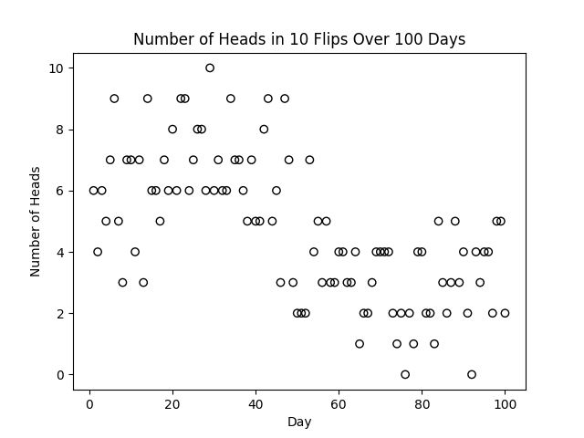
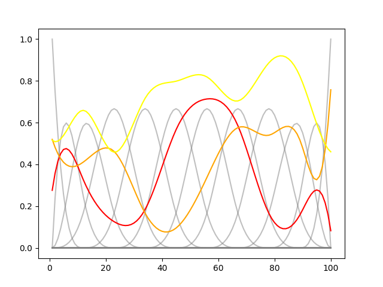
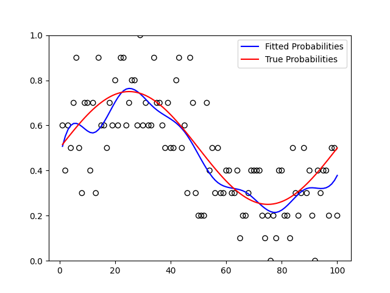

AANN 01/11/2025
Table of Contents
B-splines
Overview
In this post we will consider one of the classic methods of curve fitting, B-slines. This is one of those things that I probably was taught in my undergrad numerics course but have since completely forgotten. Basically, the idea is to build some simple functions and use a linear combination of them to approximate the curve of interest. If you can tolerate some calculus and linear alegbra, you can then find neat ways to regularise this problem. Don't worry though, this post just demonstrates how you might work with these objects in Python.
Background
B-spline basis elements, \(B_{i,p}(x)\), are piece-wise polynomial functions. To construct these functions, you need to specify two things: the degree \(p\) of the polynomials, and a set of "knots", \(x_0 \leq x_1 \leq ... \leq x_m\). (The knots after the first \(p\) and before the last \(p\) are called the internal knots.) The most popular choice is \(p=3\), cubic splines.
The functions are constructed recursively. The base case for constant functions is the following:
\[ B_{i,0} = \begin{cases} 1 & x_i\leq x < x_{i+1} \\ 0 & \text{otherwise} \end{cases} \]
The \(B_{i,p}(x)\) is only non-zero on the interval \([x_i, x_{i+p+1})\). The recursion is
\[ B_{i,p}(x) = \frac{x-x_i}{x_{i+p}-x_{i}}B_{i,p-1}(x) + \frac{x_{i+p+1}-x}{x_{i+p+1}-x_{i+1}} B_{i+1,p-1}(x) \]
Looking at the powers of \(x\), you can see why they are degree \(p\) polynomials over some of the intervals and zero outside this interval. If you set things up correctly, these functions sum to \(1\) and are non-negative.
The approximations we will construct, \(\hat{f}(x)\), with these basis functions are of the form \(\hat{f}(x) = \sum_i w_i B_{i,p}(x)\). The idea here is to set this up as a linear algebra problem where we just need to select appropriate \(w_i\).
Example
As a toy example, lets consider an experiment the little robot character carried out. You can get a copy of the script here. Everyday for 100 days, they flipped a coin 10 times and recorded the number of heads. They think the probability of getting a heads changes across this time and want to model the probability of heads through time. The time series of binomial random variables resulting from this is shown below.

Figure 1: The number of heads among 10 flips as seen by the little robot each day.
Our B-spline basis can be computed using the BSpline class provided
by scipy.interpolate (although it is a bit of a hassle to get these
values to match up with the ones provided by R, you need to add some
extra knots at each end. If you are using R, there is the
splines::bs function.
Taking a set of 17 cubic splines, we get the basis shown in the following plot. We can also sample from random weights \(w_i\) from a uniform distribution to construct some random functions.

Figure 2: A basis of cubic B-splines and a couple of random combinations of them.
If we consider weights \(0\leq w_i \leq 1\) then the \(\hat{f}\) will provide values in \([0,1]\). We model the number of heads on day \(i\), (in Figure 1) as \(H_i\sim\text{Binomial}(10, f(i))\), where \(f\) is a function returning the probability of heads. We are interested in estimating a function \(\hat{f}(x) = \sum_i w_i B_{i,3}(x)\) to approximate \(f(x)\). Since we can write down a log-likelihood for this model, this reduces to optimizing the \(w_i\). There are probably cleaner ways to do this, but throwing this in a standard PyTorch loop gives us the fit shown below which is decent.

Figure 3: The true probability used to simulate the coin flips and the fitted function describing the daily probability of heads.
Discussion
In this post, we have looked at an example of how you can use B-splines to approximate functions. By turning function approximation into a linear algebra problem, it becomes far easier to tackle with computers.